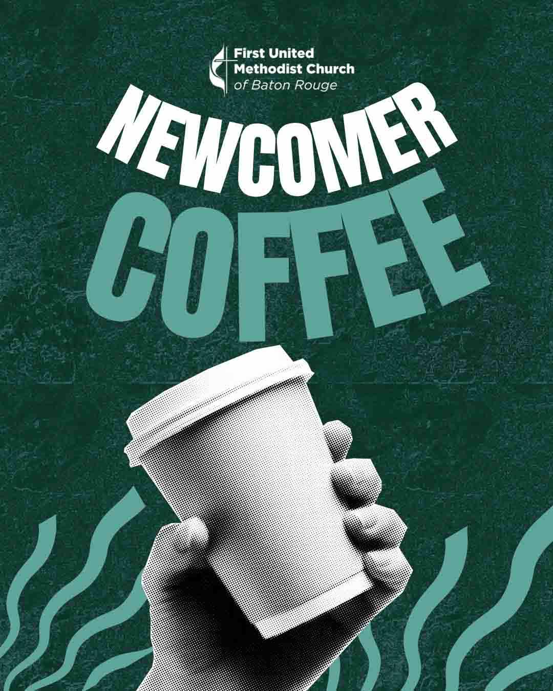

Our contemporary worship service
Sundays at 9:45 AM
Worship with contemporary Christian songs and re-imagined hymns, while embracing traditions
of the church like the Lord’s Prayer and monthly communion. Feel your body and spirit move
with the energy of our America Street Band complete with drums, guitars, keyboard, and many
voices.
This service often includes a variety of creative elements that help communicate the biblical
story such as set design, drama, and video. This service is one hour long.
We love and encourage children to attend service with their parents. Your wiggly, squiggly, boisterous, talkative, curious (and even crying) children are always welcome! We also understand if you need “grown-up” time during worship. Nursery and Sunday School are available during the service.
We love and encourage children to attend service with their parents. Your wiggly, squiggly, boisterous, talkative, curious (and even crying) children are always welcome! We also understand if you need “grown-up” time during worship. Nursery and Sunday School are available during the service.

This week's service
This Week's Scripture
Scripture: 1 Corinthians 15:58; 16:1–14 (NIV)
Therefore, my dear brothers and sisters, stand firm. Let nothing move you. Always give yourselves fully to the
work of the Lord, because you know that your labor in the Lord is not in vain. Now about the collection for the
Lord’s people: Do what I told the Galatian churches to do. On the first day of every week, each one of you
should set aside a sum of money in keeping with your income, saving it up, so that when I come no collections
will have to be made. Then, when I arrive, I will give letters of introduction to the men you approve and send
them with your gift to Jerusalem. If it seems advisable for me to go also, they will accompany me. After I go
through Macedonia, I will come to you—for I will be going through Macedonia. Perhaps I will stay with you for
a while, or even spend the winter, so that you can help me on my journey, wherever I go. For I do not want to
see you now and make only a passing visit; I hope to spend some time with you, if the Lord permits. But I will
stay on at Ephesus until Pentecost, because a great door for effective work has opened to me, and there are many
who oppose me. When Timothy comes, see to it that he has nothing to fear while he is with you, for he is
carrying on the work of the Lord, just as I am. No one, then, should treat him with contempt. Send him on his
way in peace so that he may return to me. I am expecting him along with the brothers. Now about our brother
Apollos: I strongly urged him to go to you with the brothers. He was quite unwilling to go now, but he will
go when he has the opportunity. Be on your guard; stand firm in the faith; be courageous; be strong. Do
everything in love.
“This Sermon Is About Money and You Should Listen to It ” Rev. Brady Whitton- Senior Pastor
This Week's Worship Music

You Make Me Brave
By: Bethel Music

Good Grace
By: Hillsong United
I Give You My Heart
By: Hillsong Worship

I Thank God
By: Maverick City Music
Explore America Street
Take a look at what's happening in our community.

New Comer Coffee
If you are new to First United Methodist and are ready to learn more, we invite you to join us for a Newcomer Coffee Sunday, December 6 from 9:45-10:45 a.m. in Ory Parish Hall. Registration is helpful but not required. For more information, contact Shan Schatzle, at shan@firstmethodist.org. Register by clicking the image above.

Believe and Belong
Are you discerning becoming a member of FUMC or ready to join? Attend the next Believe & Belong January 17 from 9:45–10:45 a.m. in Adult Building, Room 118. Childcare and Children’s Sunday School are available during this hour. Register by scanning the QR code. Questions? Email Dr. Chelsey Geeting, Director of Senior Adults and Hospitality, at welcome@firstmethodist.org.
The Giving Tree
The Giving Tree provides joy to a child on Christmas morning. Visit the Ory Parish Hall to select a child’s name, or select a name by visiting www.firstmethodistgivingtree.org. Questions: contact Caroline Tyler at givingtree@firstmethodist.org. Wrapped gifts are due by Sunday, December 13. Please do not return gifts before November 30.
Love Your Neighbor Van Needs Help!
The Love Your Neighbor Van needs restocking! The van currently needs long-sleeve T-shirts, sweatshirts, and sweatpants in sizes M, L, and XL, in dark colors. Please place your donations in the box near the America Street entrance. Visit the Love Your Neighbor Van Amazon Registry by clicking on the image above.
Order Your Christmas Poinsettia!
Honor or remember someone special by placing a poinsettia in our worship spaces this Christmas. Plants are $21 each. Order by visiting www.fumcbr.org/poinsettia by Sunday, December 13. Poinsettias will adorn our worship spaces December 20-27.

Advent Adventure
The Children’s Ministry invites you to experience the story of Christmas as a family through activities, crafts, food, and music at Advent Adventure on December 6 from 4:00-6:00 p.m. at the downtown Galvez Plaza. Candlelight carols begin at 5:30 p.m. Visit firstmethodistchildren.org for more information.
Gumbo Cookoff
Do you make a gumbo that people rave about? FUMC is hosting a Gumbo Cookoff on Sunday, December 13 prior to the Downtown Christmas Pilgrimage. We need chefs to bring their best gumbo, potato salad, and desserts to make this a celebration of food and fellowship! Click on the image above to sign up, or contact Katie Davis, Director of Communication and Connection, at kdavis@firstmethodist.org.

The Century Fund
Easter Sunday marked the centennial of the completion and dedication of the sanctuary. In celebration of this milestone, we will receive a special offering throughout the year to launch the Century Fund. This new fund will help FUMC provide lasting support to local nonprofit partners in Baton Rouge. We are grateful for the support the campaign has already received. As we continue working toward our goal of $1,000,000, we invite you to pray about how you will support this effort. Click on the image above to make a gift.
The America Street Service Team

Sophia Abbott
Director of America Street

Jake Warren
Worship Leader